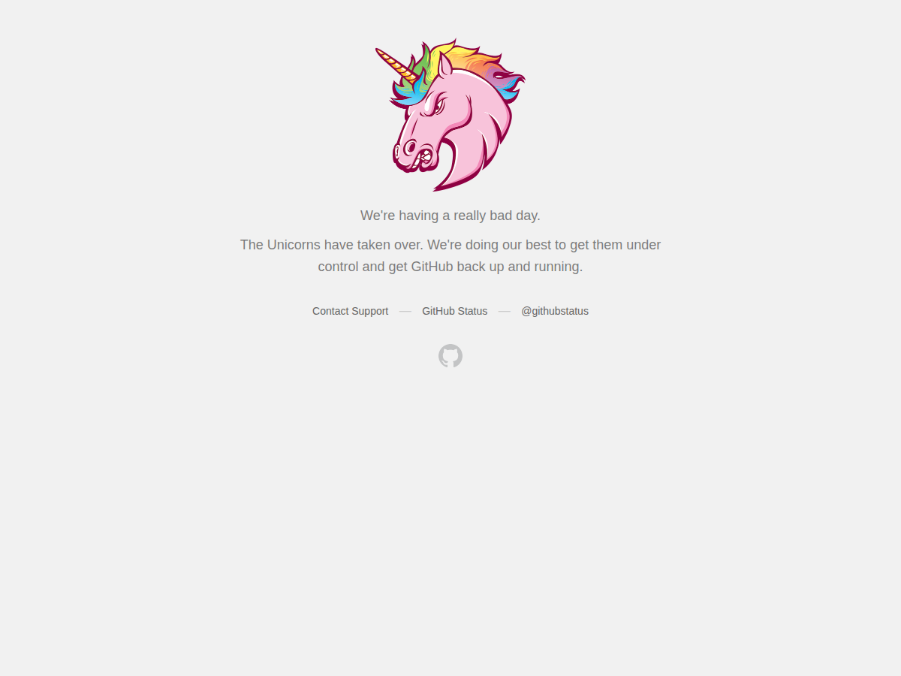

// discipline engine · v3.1.0
Conqueror
A private, offline resilience workspace that lives in a single HTML file. Read, reflect, journal, track and review — no server, no account, and no build step needed to run it.
dashboard preview · illustrative
A practice system, not just a reader
Reading system
A multi-book library with parts and chapters, and a reader built for study.
- Inline highlights in amber, blue and green, with notes
- Bookmarks, favourite quotes, focus mode, read-aloud
- Inline SVG diagrams and dwell-time tracking
Journal & reflection
Six entry types with tags, filters, dictation and image attachments.
Tracker
Habits, streaks and the consistency ribbon — the part that makes a practice visible rather than remembered.
Review
A spaced-repetition queue, so what you read comes back before it is gone.
Export
Your entries and progress come out as a file, not as a screenshot of someone else's server.
Six themes
The whole workspace recolours, and the choice is remembered on your device.
The app

What it does not do
No server, no account, no telemetry. The app makes no network requests after it loads — open it with the network off and every system still works.
Your reading, your journal and your streak stay in the browser on your own device. There is nothing to sign into and nothing to sync, which also means there is nothing to lose to someone else's outage.
Support the work


Free to use, and it stays free
One person's work: no company, no ads, no tracking, no paid tier. If it earned its keep, a contribution keeps the next one coming — any amount, or none.